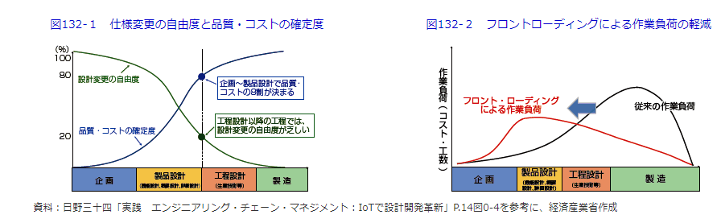

<style type="text/css"> .reveal h1, .reveal h2, .reveal h3, .reveal h4, .reveal h5, .reveal h6 { text-transform: none; text-align: left;} .reveal p {line-height: initial; text-align: left;}.text-center { text-align: center !important; } li {font-size: 0.9em; line-height: initial;} .reveal small {line-height: 2.3em} .reveal pre {width: 100%} .reveal.slides{width: 100%} </style> <h2 class="text-center">計算力学技術者資格</h2> 2024年2月28日 --- ### 計算力学技術者資格認定とは 解析品質の保証、製品の開発効率・性能・安全性の向上を実現 するための技術レベルが社内外で正しく評価 される認定資格 主催：日本機械学会 計算力学技術者資格認定事業員会 <a href="https://www.jsme.or.jp/cee/">計算力学技術者資格</a>から抜粋 --- ### 対象者 計算力学技術者ソフトウェアを用いた製品開発・設計に携わる技術者（CAE解析技術者） | 等級 | 受験資格 | |----------|----------| |1級 | 機械系大卒レベル<br>１年以上の実務経験 | Row 1 Col 3 | |2級 | 機械系大学院卒レベル<br>3 年以上の実務経験 | |上級アナリスト |1級取得者<br>7 年以上の実務経験<br>解析関連業務のマネジメント | --- ### 分野 計算力学技術者には以下の ３分野 がある。 - 固体力学（構造解析、熱解析） - 熱流体（非圧縮、圧縮、粒子法、混相流、燃焼流） - 振動 --- ### 昨今のものづくりの流れ 製品開発の効率化と仕様変更の自由度が高い設計段階での性能向上・品質向上を目指す うえで 計算力学を用いた CAE 解析によるデジタルエンジニアリング は必須。 <a href="https://www.meti.go.jp/report/whitepaper/mono/2020/honbun_html/honbun/101031_2.html">ものづくり白書2020年版（設計力強化戦略）</a>  --- しかし、普及に伴い教育をおろそかにすると以下の問題が生じる。 - 間違った設定やアルゴリズムの選択の可能性があり、物理的に正しくない結果を得て設計判断を下した 結果、性能不足と事故など大きな損失につながる可能性がある。 <br>※シミュレーションにも品質担保が重要 - シミュレーションは実機の代替と考え現物主義の思考が無くなる。 計算力学のメリットを活かすために、 計算力学技術者の技術レベルの保証 --- ## 資格取得のメリット 計算力学技術者の資格取得を目指すことは以下のメリットがある --- - スキルの観点 物理的に正しいシミュレーションの設定により、計算不具合を減らす ソフトウェアの性能を最大限に活かす（ソフトとハードの両方の知識） - 製品開発・設計の観点 設計の事前検証によるフロントローディングの実現 新しい手法の導入 仮想上で設計検証が可能のため、アイデアを効率よく検証 - モチベーション -- CAE 解析を使った計算力学技術者として社内でも活躍できる 計算力学技術者の資格は決して簡単ではなく、合格に向けてチャレンジする姿勢が評価されるとモチベーションアップにつながる